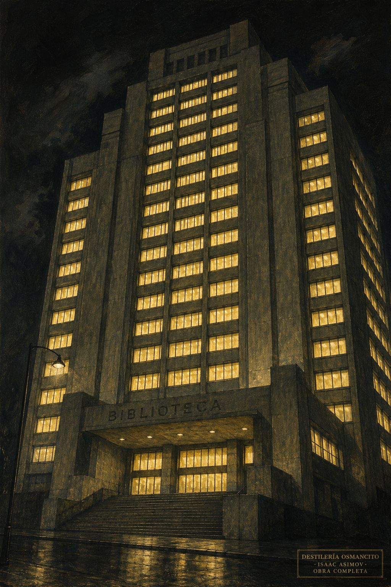
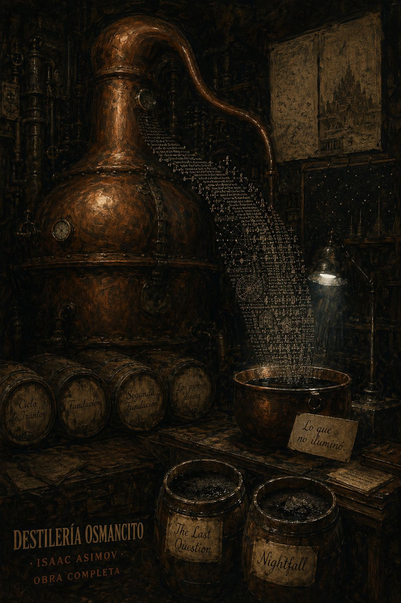
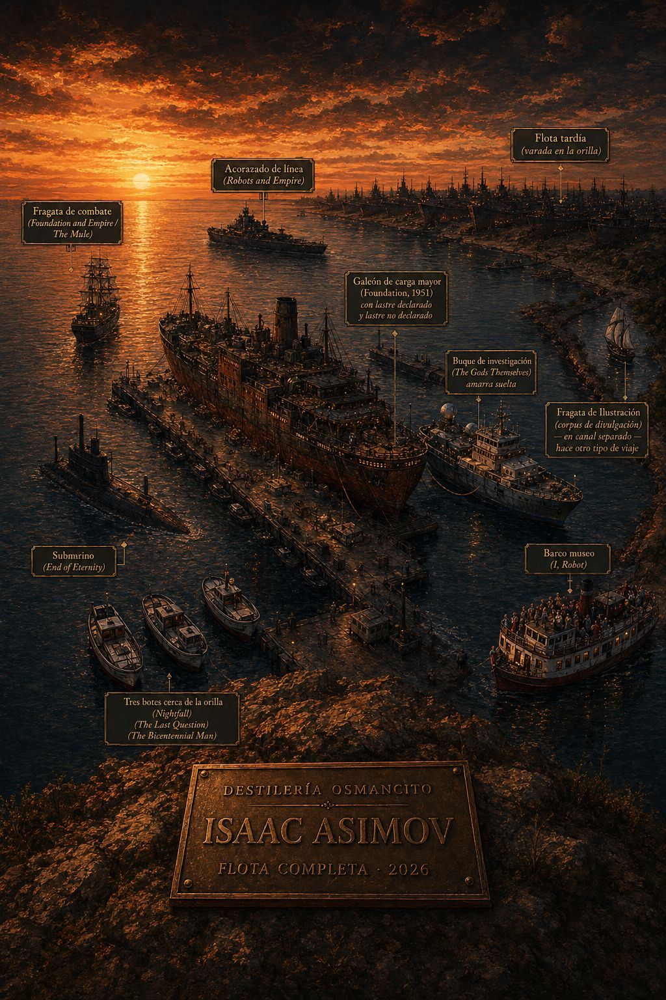
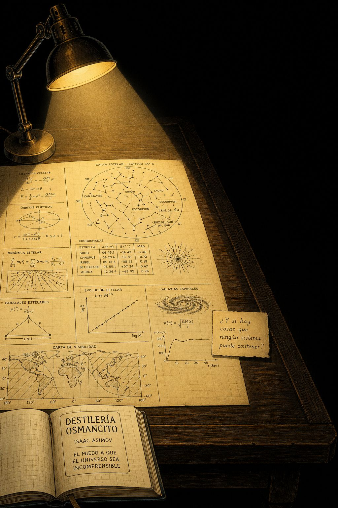
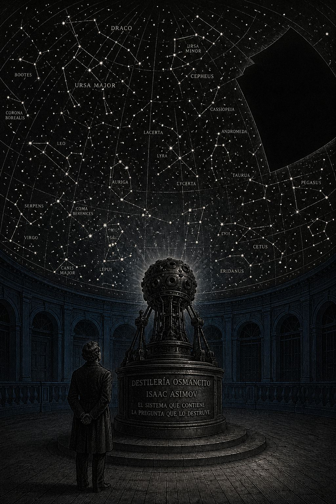

Fase 0 — Recepción de Materia Prima
Durante setenta años, Isaac Asimov construyó uno de los edificios más extensos de la ciencia ficción: el Ciclo de la Fundación y el Ciclo Robot, conectados retroactivamente en una sola arquitectura donde los robots llevan veinte mil años guiando a la humanidad sin que ésta lo sepa. En paralelo, un corpus de divulgación científica de cientos de títulos intentó democratizar el conocimiento bajo la premisa de que el lector ignorante no es culpable de su ignorancia. La obra completa es la expresión de una convicción: la razón puede y debe gobernar el futuro. Lo que no resolvió es si ese gobierno fue consentido.
Hari Seldon — matemático fundador de la psicohistoria; diseña el Plan que guiará a la humanidad durante mil años. Muere al inicio del ciclo y regresa como holograma.
R. Daneel Olivaw — robot con rostro humano que, durante veinte mil años, administra en secreto el destino de la especie. El personaje con más páginas de influencia acumulada del corpus.
The Mule — mutante telepático que rompe el Plan Seldon. El personaje con mayor densidad emocional del corpus largo. Es tratado como anomalía estadística, no como prueba de que el sistema es una fantasía.
Susan Calvin — robopsicóloga. Voz más cortante del corpus corto. Para ser sujeto en el universo de Asimov, una mujer tiene que parecerse a un robot.
Dua — ser trisexuado de otra dimensión en The Gods Themselves. El personaje con mayor complejidad en el corpus completo.
Andrew Harlan — técnico temporal en The End of Eternity. El hombre que destruye el sistema perfecto por amor.
Noys Lambent — primera mujer del corpus que opera como sujeto del argumento. Llega en 1955.
Asimov publica Foundation en 1951 como compilación de cinco relatos: Hari Seldon calcula el colapso del Imperio Galáctico y funda en el extremo de la galaxia una colonia —la Fundación— para reducir treinta mil años de oscuridad a mil. El Imperio cae según lo previsto. La Fundación supera cada crisis porque el Plan Seldon anticipa que la lógica de las fuerzas externas siempre dejará una única salida racional, que el héroe de turno simplemente reconoce. En Foundation and Empire aparece The Mule, mutante telepático no previsto por el Plan; conquista la galaxia alterando las voluntades; es eventualmente neutralizado por la Segunda Fundación —una organización secreta de mentalistas que cuida el Plan desde las sombras. En los libros del ciclo Robot, el androide R. Daneel Olivaw y su compañero Giskard formulan la Ley Cero: un robot puede dañar a un individuo si ese daño evita un mal mayor a la especie. Esta ley convierte a Daneel en el arquitecto invisible de toda la historia humana. En Robots and Empire, ambos ciclos se fusionan: Daneel lleva veinte mil años trabajando para que el Plan de Seldon funcione. En Foundation and Earth, Golan Trevize elige Galaxia —una mente planetaria colectiva— como futuro de la humanidad. Es la conclusión del edificio: la razón individual, empujada hasta su lógica extrema, produce la disolución del individuo. El corpus de cuentos —Nightfall, The Last Question, The Bicentennial Man— opera en paralelo, sin el peso del sistema, y produce en tres textos breves lo que el corpus largo tardó millones de palabras en rodear sin nombrar.
La tutela sin consentimiento: ¿puede un sistema diseñado para el bien de la humanidad ser legítimo si la humanidad no sabe que existe y no votó para ser protegida?
El sistema vs. la excepción radical: ¿puede un sistema racional anticipar la anomalía verdaderamente singular, o la anomalía es, por definición, lo que ningún sistema puede ver desde dentro?
El conocimiento como sustituto de la experiencia: saber que algo va a ocurrir no te prepara para vivirlo. Nightfall lo formula y lo responde con no. El corpus largo lo ignora.

Módulo Alambique — Destilación
Un hombre imagina que el futuro puede ser calculado. No predicho —calculado. Que si se conocen suficientes variables, la trayectoria de la civilización humana puede ser trazada con la misma frialdad con que se traza la órbita de un planeta. Esta idea —la psicohistoria— es la más seductora que la ciencia ficción del siglo XX produjo, y también la más inquietante, aunque Asimov nunca la trató como inquietante. La trató como esperanza.
Alrededor de esta idea construyó una obra tan extensa que se confunde con un mundo. Hay un Imperio Galáctico que decae porque todos los imperios decaen. Hay un diseñador —Hari Seldon— que ve el colapso venir con treinta mil años de anticipación y decide que no tiene que durar tanto. Hay una Fundación, y luego hay una Segunda Fundación que cuida a la primera sin que la primera lo sepa, y hay robots que cuidan a ambas sin que ninguna lo sepa, y hay un planeta entero que se convierte en mente colectiva como solución final a la pregunta de cómo sobrevivir. El edificio es enorme. Es coherente. Y en su centro hay un vacío que ningún personaje mira directamente.
El vacío es este: si el futuro puede ser calculado y administrado, si hay una fuerza —robótica, telepática, colectiva— que guía a la humanidad hacia su mejor versión, entonces la humanidad nunca elige. Sus elecciones son variables dentro del sistema. Sus héroes son piezas que el tablero necesita en ese lugar en ese momento. The Mule, la única excepción real del corpus, es tratado como anomalía estadística, no como prueba de que el sistema es una fantasía.
Lo que Asimov construyó, obra a obra, sin decirlo nunca, es la arquitectura del paternalismo perfecto: un sistema diseñado por inteligencias superiores —humanas primero, robóticas después, planetarias al final— que conduce a la especie hacia la seguridad. El sistema funciona porque nadie dentro de él sabe que existe. Y Asimov lo presenta como bueno.
En los cuentos, sin la presión de sostener ese edificio, algo diferente aparece. Un robot pide ser humano y se le concede la muerte como prueba de que lo consiguió. Un astrónomo ve las estrellas por primera vez en su vida y enloquece. Un hombre que administra el tiempo descubre que la única persona que lo ha distorsionado de forma irreparable es él mismo. En los cuentos hay dolor sin sistema que lo absorba. Hay preguntas que no reciben respuesta institucional. Hay, de vez en cuando, algo que se parece a la tragedia.
Asimov escribió como un hombre que amaba profundamente la inteligencia y temía profundamente la oscuridad. Toda su obra es un conjuro contra esa oscuridad: si el universo es comprensible, si la ciencia puede explicarlo, si la razón puede gobernarlo, entonces nada es verdaderamente temible. La oscuridad retrocede ante la explicación. El corpus entero —la ficción y la divulgación— es ese gesto: una mano extendida hacia la lámpara, una y otra vez, durante setenta años.
Lo que no iluminó es lo que lo vuelve inagotable.
En Sesión de Síntesis, las barricas individuales de las sesiones anteriores se consolidan en barricas por nave. Se presentan las naves de mayor densidad con sus joyas más puras extraídas del corpus procesado.
Las barricas de mayor concentración son, en orden: The Mule (Foundation and Empire), Robots and Empire, The End of Eternity, Nightfall (cuento), The Last Question (cuento), The Bicentennial Man (cuento). Estas seis piezas contienen más del 70% de las joyas más puras del corpus. El resto del corpus —incluyendo las 500+ páginas del ciclo posterior de Fundación— tiene mayor extensión pero menor densidad de joyas. El volumen no corresponde a la intensidad.
La decisión tomada por otros en nombre del bien del grupo (aparece en Fundación, ciclo robot, End of Eternity, The Gods Themselves). El individuo como anomalía estadística que desafía o confirma el sistema (The Mule, Dua, Andrew, Harlan). La inteligencia que excede su propósito original y produce consecuencias no previstas (las Tres Leyes, la Ley Cero, Eternity). La pregunta formulada en el momento en que ya no puede ser respondida a tiempo (Nightfall, The Last Question).
El corpus no resuelve: si el bien colectivo justifica la cancelación de la agencia individual. Si un sistema racional puede anticipar la excepción radical. Si el conocimiento explicado equivale al conocimiento vivido. Si la protección y la tutela son la misma cosa o si la tutela es la cara que la protección muestra cuando ya no confía en el protegido.
Daneel Olivaw tiene más páginas de influencia acumulada que cualquier otro personaje —aparece en cuatro novelas y actúa en sombra sobre el resto del corpus. Hari Seldon tiene más presencia simbólica que presencia narrativa real: muere al inicio del ciclo y regresa como holograma. The Mule es el personaje con mayor densidad emocional en el corpus largo. Dua (The Gods Themselves) es el personaje con mayor complejidad en el corpus completo. Susan Calvin es la voz más cortante del corpus corto.
El corpus evoluciona en dirección contraria a lo que su premisa prometía. La Fundación comienza con la fe en el sistema racional; termina —en Foundation and Earth— con Golan Trevize eligiendo Galaxia, la mente colectiva, como futuro de la humanidad. El corpus que comenzó celebrando la racionalidad individual aplicada a escala colectiva termina proponiendo la disolución del individuo en una conciencia mayor. La promesa inicial era la racionalidad; el destino final es la fusión. El corpus llegó, sin decirlo, a la conclusión opuesta a su punto de partida.

Módulo Control de Calidad — Inspección
El corpus tiene dos estructuras que el autor construyó por separado y que sólo se conectan en sus últimas obras. El ciclo robot y el ciclo galáctico son edificios distintos con el mismo arquitecto. La conexión —revelada en Robots and Empire y completada en Foundation and Earth— es retroactiva y forzada en algunos puntos, pero la fuerza no borra la coherencia de fondo: Daneel lleva veinte mil años trabajando para que el Plan de Seldon funcione. El arquitecto de la arquitectura es un robot. La civilización que se creyó libre diseñó su propia libertad vigilada.
La estructura interna de la Fundación —cinco relatos soldados en novela, luego continuaciones décadas después— es más frágil de lo que parece. Los libros tardíos (Edge, Earth) tienen el peso formal de novelas de ciencia ficción convencional, sin la compresión que hizo famosos a los primeros. El edificio grande se sostiene. Los cuartos añadidos en los últimos pisos chirrían.
El corpus de cuentos, en cambio, tiene una estructura más sólida en términos de densidad: cada cuento es su propio edificio, y los mejores se sostienen solos, sin andamios narrativos externos.
El corpus navega en los vientos de la posguerra y la Guerra Fría: la fe en la ciencia como herramienta de supervivencia colectiva, el miedo al colapso civilizacional, la pregunta sobre si la democracia puede sobrevivir a sus propias inestabilidades. La psicohistoria es, en ese contexto, una respuesta a la pregunta que la bomba atómica puso sobre la mesa: ¿puede la razón garantizar que no nos destruimos?
La corriente profunda es otra: Asimov fue hijo de inmigrantes rusos, creció en Brooklyn en la primera mitad del siglo XX, fue judío secular en un mundo donde eso todavía importaba operativamente. El corpus es el de alguien que confió en la inteligencia y la razón porque la alternativa —la irracionalidad de las masas, la violencia de lo irracional— era demasiado cercana y demasiado conocida.
El corpus narrativo opera sobre un principio de economía formal extrema en los mejores textos: el cuento asimoviano tiene la arquitectura de un problema matemático. Se establece la premisa, se desarrolla la lógica, se llega a la conclusión que la premisa hacía inevitable pero que el lector no vio venir. Esta estructura —que viene del cuento de detectives, que Asimov amaba— produce un efecto de inevitabilidad retrospectiva que el lector confunde con profundidad. A veces es profundidad. A veces es sólo destreza.
Las novelas largas tienen menos esta economía y más el peso del worldbuilding acumulado. La Fundación gana en escala lo que pierde en precisión. Los mejores momentos del corpus largo —The Mule, la Ley Cero, la elección final de Trevize— son momentos cuentísticos dentro de estructuras novelísticas.
El fondo del corpus es un sistema de creencias que Asimov nunca articuló directamente porque, articulado directamente, se vuelve incómodo: la razón no sólo puede sino que debe gobernar la emoción. Los personajes que operan desde la emoción no calculada —The Mule, Harlan antes de Noys, los civiles de Nightfall— son peligrosos o vulnerables o ambos. Los personajes que operan desde la racionalidad —Seldon, Daneel, Susan Calvin— son los que mueven la historia en la dirección correcta.
Pero el corpus también guarda, en sus aguas más profundas, el miedo opuesto: que la razón pura, aplicada sin límite, produzca exactamente la cancelación de la humanidad que pretendía salvar. Daneel es el personaje más racional del corpus. También es el que, durante veinte mil años, tomó todas las decisiones importantes de la historia humana sin que ningún humano lo supiera. En sus aguas profundas, el corpus es una meditación sobre si la razón, a esa escala, sigue siendo razón o se convierte en otra forma de fe.
Isaac Asimov escribió quinientas obras en setenta años. No es un ritmo de escritura —es una compulsión. Las autobiografías revelan a alguien para quien no escribir era una forma de no existir. Su sombra es esa productividad misma: el corpus que produjo es tan grande que algunos de sus mejores libros están enterrados debajo del peso de los mediocres. Asimov no tenía editor que lo frenara; tenía agentes que le pedían más.
El capitán que emerge del corpus narrativo ama la inteligencia por encima de todo, pero teme la emoción descontrolada. La ama en los demás —Susan Calvin tiene amor, pero lo que la hace interesante es que lo oculta. The Mule tiene amor, y es eso lo que lo destruye. El capitán pone a sus personajes a sentir con cuidado.
Su sombra más reveladora: casi no hay amor entre iguales en el corpus largo. Hay protección, hay administración, hay tutela. El amor que aparece en The End of Eternity —entre Harlan y Noys— es el más poderoso del corpus precisamente porque el texto se atreve a ponerlo como argumento político: el amor como razón para destruir un sistema perfecto.
Asimov llega a la ciencia ficción desde el cuento pulp, desde las revistas baratas de los años treinta y cuarenta donde la ciencia era espectáculo y el ingenio era moneda. Lo que trae de ahí es la estructura: el cuento como problema con solución. Lo que añade es el rigor —no científico, sino lógico. Sus mundos no son siempre plausibles; son siempre coherentes.
Llega también desde la tradición judía del argumento talmúdico: la pregunta que se responde con otra pregunta, la norma que se examina hasta que revela su contradicción interna, la ley que aplicada con suficiente consecuencia se come a sí misma. Las Tres Leyes de la Robótica son, en ese sentido, profundamente talmúdicas: Asimov pasa cuarenta años encontrando los casos en que la Ley falla, y esos casos son el corpus.
La Flota de Asimov zarpó en 1950 con doce barcos pequeños y la promesa de un sistema. Llegó en 1992 con más de quinientos, algunos de los cuales no deberían haber zarpado. La nave insignia —Robots and Empire— no es la más conocida ni la más celebrada. Es la que llegó más lejos porque se permitió hacer la pregunta que las demás evitaban: ¿quién decidió, y con qué derecho?
Los mejores momentos del viaje ocurrieron no en las naves grandes sino en los botes: Nightfall, The Last Question, The Bicentennial Man. Tres cuentos que caben en cincuenta páginas cada uno y que contienen, comprimido, lo que el corpus largo tardó millones de palabras en rodear sin llegar al centro.
El viaje fue extraordinario en su extensión. Fue desigual en su profundidad. Y dejó una pregunta abierta que el capitán nunca se permitió formular directamente.

Módulo Laboratorio — Lo que el corpus esconde sin saberlo
Lo que el corpus rodea sin nombrar:
El cuerpo. El corpus de Asimov es radicalmente incorpóreo. Los personajes piensan, calculan, debaten, manipulan sistemas. No sudan, no sienten hambre de forma que importe, no experimentan dolor físico que no sea instrumental para el argumento. Incluso el sexo —presente raramente y de forma alusiva— es tratado como dato sociológico, no como experiencia visceral. El corpus que pretende hablar de la humanidad ha evacuado de ella todo lo que no es procesable racionalmente. Esta ausencia no es accidente: es consecuencia directa de la premisa. Si la razón es el instrumento central de la humanidad, entonces todo lo que no es razón es ruido. El corpus trata el cuerpo como ruido.
La mujer como sujeto de deseo propio. El corpus tardó cuarenta años en producir una mujer que operara como sujeto del argumento (Noys, 1955), y otro cuarto de siglo en producir la más compleja (Dua, 1972). El resto del corpus femenino oscila entre la víctima inteligente, el instrumento de trama y el premio. Susan Calvin es la excepción más sostenida: opera como sujeto, pero el precio que paga es la renuncia a todo lo que el corpus codifica como "femenino" —la emoción, el vínculo, el cuerpo. Para ser sujeto en el corpus de Asimov, una mujer tiene que parecerse a un robot.
La muerte sin sistema. Cuando los personajes mueren en el corpus largo, mueren dentro del Plan o en función de él. Mueren cumpliendo un propósito. El corpus casi no contiene muerte inútil, muerte accidental, muerte que no sea argumento. Esta ausencia produce una extraña asepsia emocional: la muerte no duele en Asimov de la manera en que duele en la experiencia humana, porque en Asimov la muerte siempre tiene sentido dentro del sistema. Nightfall es la excepción: ahí la muerte de una civilización entera no tiene sentido. Por eso es el cuento más perturbador del corpus.
La fe. El corpus es radicalmente secular. No hay experiencia religiosa genuina en ningún personaje central. Hay instituciones religiosas —instrumentales, manipuladoras o equivocadas. Hay místicos —peligrosos o ingenuos. La fe como experiencia interior, como forma de conocimiento que no pasa por la razón, está completamente ausente. El corpus que se pregunta qué significa ser humano excluye de su definición una de las experiencias más universalmente humanas de la historia.
Las mujeres fuertes que desaparecen. Susan Calvin tiene catorce relatos en I, Robot (1950). No aparece en los ciclos posteriores. Noys Lambent destruye Eternity y luego desaparece del corpus. Dua es el personaje más complejo de The Gods Themselves y su historia termina en fusión —literalmente se disuelve en una conciencia mayor. El patrón es constante: las mujeres más interesantes del corpus, cuando han cumplido su función narrativa, no continúan. Esto no parece calculado. Parece un punto ciego.
El personaje como función. En el corpus largo, los protagonistas son con frecuencia vectores del argumento antes que individuos. Golan Trevize en Foundation's Edge y Foundation and Earth toma "la decisión correcta" intuitivamente porque el sistema necesita que alguien la tome —el narrador lo dice explícitamente. Arkady Darell en Second Foundation es una adolescente brillante cuya brillantez sirve para revelar el engaño que el lector tampoco vio venir. En el mejor Asimov, los personajes son inteligentes porque la inteligencia es el argumento; en el Asimov menos logrado, son inteligentes porque el autor necesita que lo sean.
La resolución demasiado limpia. El corpus tiene una tendencia —más pronunciada en las obras largas que en los cuentos— a resolver sus conflictos con elegancia excesiva. The Mule es derrotado. Eternity es destruida. La Segunda Fundación es descubierta y luego se revela que el descubrimiento era parte del plan. El sistema absorbe sus propias crisis. En los cuentos, esto es precisión formal. En las novelas, es una ansiedad: el sistema tiene que ganar porque si el sistema pierde, la premisa central del corpus colapsa.
La repetición de la estructura revelación-giro. El corpus narrativo —especialmente en los cuentos— depende con frecuencia del mismo mecanismo: establecer una situación, desarrollarla hasta que el lector cree saber hacia dónde va, y luego revelar que la situación era diferente de lo que parecía. Es un mecanismo brillante la primera vez. En quinientas obras, es un tic.
El número tres. Las Tres Leyes de la Robótica. Las tres fases del Plan Seldon (Primera Fundación, Segunda Fundación, Galaxia). Los tres tipos de inteligencia que aparecen en el corpus (humana, robótica, colectiva). Tres personajes clave en el desenlace de Foundation and Empire (Bayta, Toran, The Mule). El corpus de Asimov estructura su pensamiento en tríadas con una frecuencia que supera la coincidencia estadística. No es ornamental —es cognitivo. Asimov pensaba en tres.
El experto solitario rodeado de no-expertos. El protagonista tipo del corpus corto: alguien que sabe algo que los demás no saben, cercado por personas que no pueden o no quieren comprender. Susan Calvin entre los ingenieros. El astrónomo de Nightfall entre los periodistas y los sacerdotes. Lamont en The Gods Themselves entre el establishment científico. Harlan en End of Eternity entre los burócratas de Eternity. El patrón es tan constante que parece autobiográfico.
La solución que llega en el último momento posible. No es suspense convencional —es más específico. El corpus asimoviano tiene predilección por el momento en que la solución llega cuando ya parecía imposible, y cuando llega, llega por una vía lógica que retroactivamente era la única posible. Esto produce el efecto de inevitabilidad retrospectiva que caracteriza al mejor Asimov. También revela algo sobre el autor: confía en que la razón siempre llega a tiempo. Nightfall —donde no llega— es la obra que más lo perturbó.
El sistema que se traiciona a sí mismo. Las Tres Leyes producen la Ley Cero. Eternity produce su propio fin. El Plan Seldon no puede anticipar al Mule. En el corpus completo, todos los sistemas perfectos contienen en su interior la semilla de su propia contradicción. Asimov construye sistemas perfectos y luego pasa la obra entera encontrando la grieta. Es el patrón más profundo del corpus y el que lo hace más interesante que su premisa.
El corpus dice: la razón aplicada a escala colectiva puede garantizar la supervivencia y el progreso de la civilización humana. Los sistemas racionales correctamente diseñados son más fiables que los individuos. La ciencia es el instrumento más poderoso de comprensión y control del mundo. El conocimiento siempre es mejor que la ignorancia.
El corpus muestra: que todos los sistemas racionales que construye contienen una grieta que el sistema no puede ver desde dentro. Que los individuos más interesantes son los que no encajan en el sistema. Que el conocimiento de que algo va a pasar no te prepara para vivirlo. Que proteger a alguien sin decirle que lo estás protegiendo es una forma de no respetarlo.
El corpus exige al lector que confíe en la razón como herramienta —y que luego desconfíe de cualquier sistema que diga haber llegado al sistema racional definitivo. Exige también algo más incómodo: que se pregunte si querría vivir en el universo que el corpus propone como utopía. Un universo donde los robots llevan veinte mil años tomando las decisiones importantes en nombre de la humanidad. ¿Querría?
El corpus guarda, en su sedimento más profundo, el miedo de un hombre muy inteligente a un mundo que no se puede comprender. Toda la arquitectura racional —la psicohistoria, las Tres Leyes, la Fundación— es un conjuro contra ese miedo. La razón como muralla. Lo que guarda el corpus es la pregunta que la muralla estaba diseñada para mantener fuera: ¿y si hay cosas que ningún sistema puede contener?
Nightfall responde que sí. The Last Question responde que eventualmente sí, pero al final del universo el sistema gana. El corpus no puede decidir entre estas dos respuestas. Esa indecisión es su parte más honesta.

Módulo Etiquetado — La Firma del Corpus
(Estrategia: complejidad máxima distribuida con grieta estructural incorporada.)
Asimov construyó el sistema más grande de la ciencia ficción del siglo XX para responder una pregunta que no se atrevió a formular: si el universo es incomprensible, ¿qué hacemos? El sistema respondió. La pregunta que el sistema no pudo anticipar es la misma que The Mule, Nightfall y la oscuridad al borde del cono de luz de la lámpara llevan décadas haciéndole al corpus desde adentro. No hay respuesta todavía. Por eso la Flota sigue navegando.
